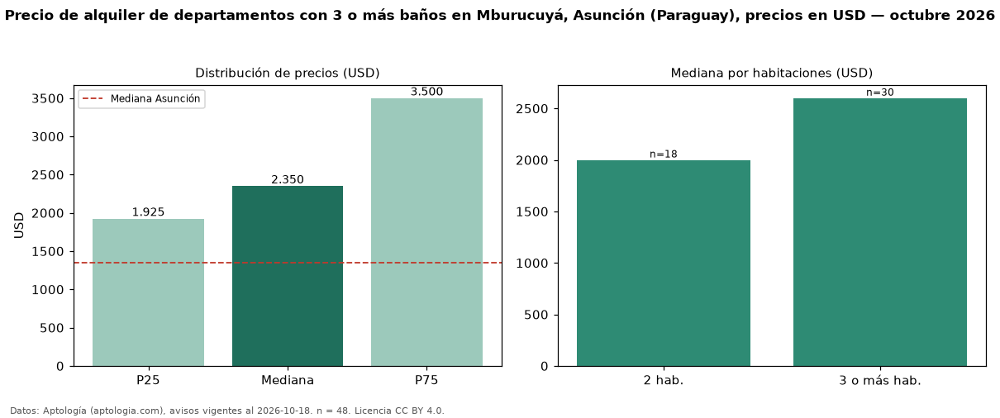

Precio de alquiler de departamentos con 3 o más baños en Mburucuyá, Asunción (Paraguay), precios en USD — octubre 2026
En Mburucuyá, Asunción (Paraguay), la mediana de canon mensual de departamentos con 3 o más baños es USD 2.350, según 48 avisos vigentes. Frente a la mediana de todos los departamentos en alquiler de Mburucuyá (USD 1.400, n = 177), queda 68 % por encima; este segmento reúne el 27 % de esos avisos. Por metro cuadrado, la mediana es USD 12,69/m² al mes (n = 46), 9 % por debajo del conjunto de referencia (USD 13,96/m²). El área mediana anunciada es 168 m². El segmento con más oferta es el de 3 o más habitaciones (30 avisos, mediana USD 2.600); pasar de 2 habitaciones a 3 o más habitaciones cambia la mediana +30 %. La mitad central de los avisos va de USD 1.925 a USD 3.500 (razón 1,8), una dispersión moderada. La mediana de todos los departamentos en alquiler de Asunción es USD 1.350 (+74 % de diferencia). Datos: Aptología (aptologia.com), CC BY 4.0 — https://www.aptologia.com/py/alquiler/asuncion/mburucuya. Archivos: PDF, CSV con las cifras y gráfica PNG.

| Avisos únicos | 48 |
|---|---|
| Percentil 25 | COP 1.925 |
| Mediana | COP 2.350 |
| Percentil 75 | COP 3.500 |
| Mediana por m² | COP 12 |
Fuente: avisos vigentes de portales inmobiliarios recopilados por Aptología, deduplicados (mínimo 30 avisos únicos por celda). Precios pedidos, no cerrados. Fecha: 2026-10-18.